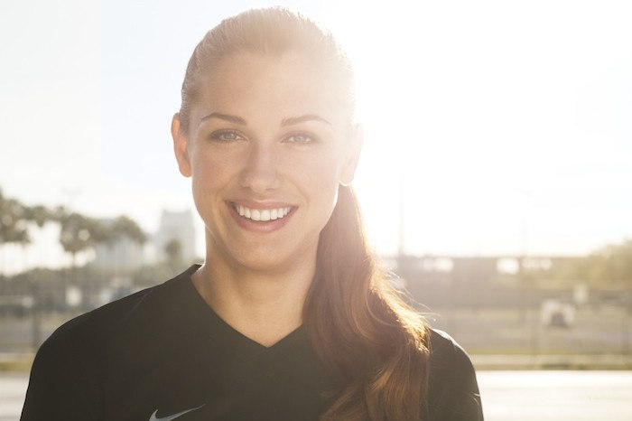

About her...
Alexandra Patricia Morgan Carrasco is an American soccer player, Olympic gold medalist, and FIFA Women's World Cup champion. She is a forward for Orlando Pride in the National Women's Soccer League and the United States national team. Although she has tremendous skill in the game of American Football, her skills and technique off the pitch are hard to match.She is passionate aout almost everything her mind sets her to. Womens rights are also a huge part of what she stands for. Her story proves how women deserve what they have earned and will not tolerate any less.
A few years ago it was brought to the surface that female athletes were not getting paid nearly as much as the mens. When the USWNT (united states womens national team) heard about this not much was done but Alex Morgan was not going to let ths by.
She states many good reasons for why women should get equal pay and was not letting this slip by. She says "It's a pretty simple concept. But as with so many professions in the United States, it is still not a reality for the female soccer players who represent this country.
We ultimately decided to file this motion for all the little girls around the world who deserve the same respect as well as the boys. They deserve a voice, and if we as professional athletes don't leverage the voices we have, we are letting them down. We will not let them down."
- Alex Morgan